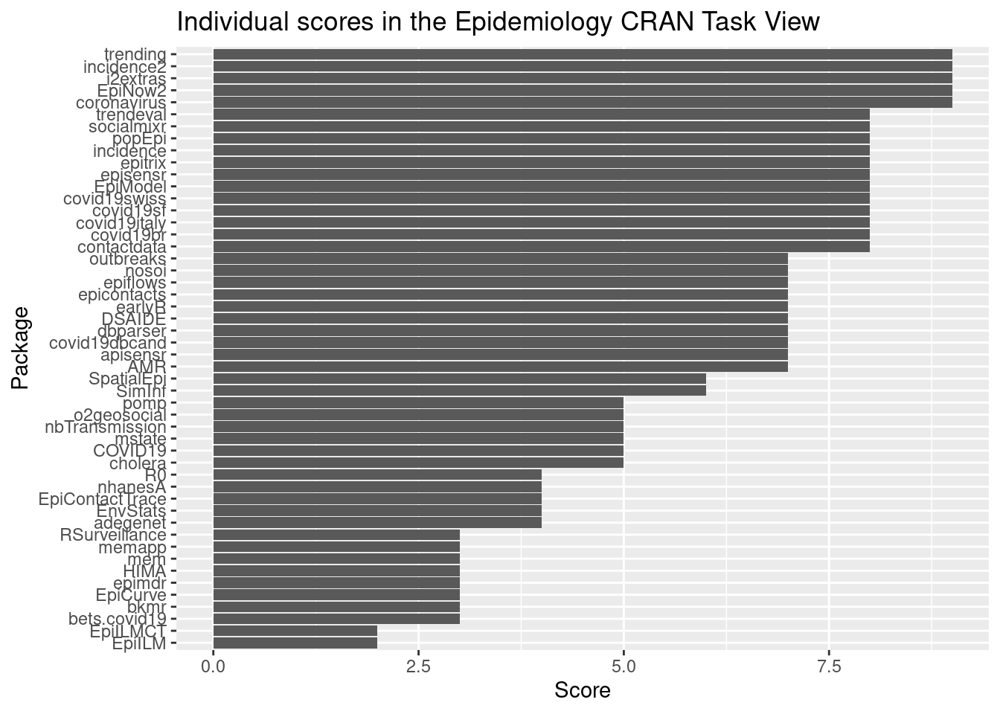
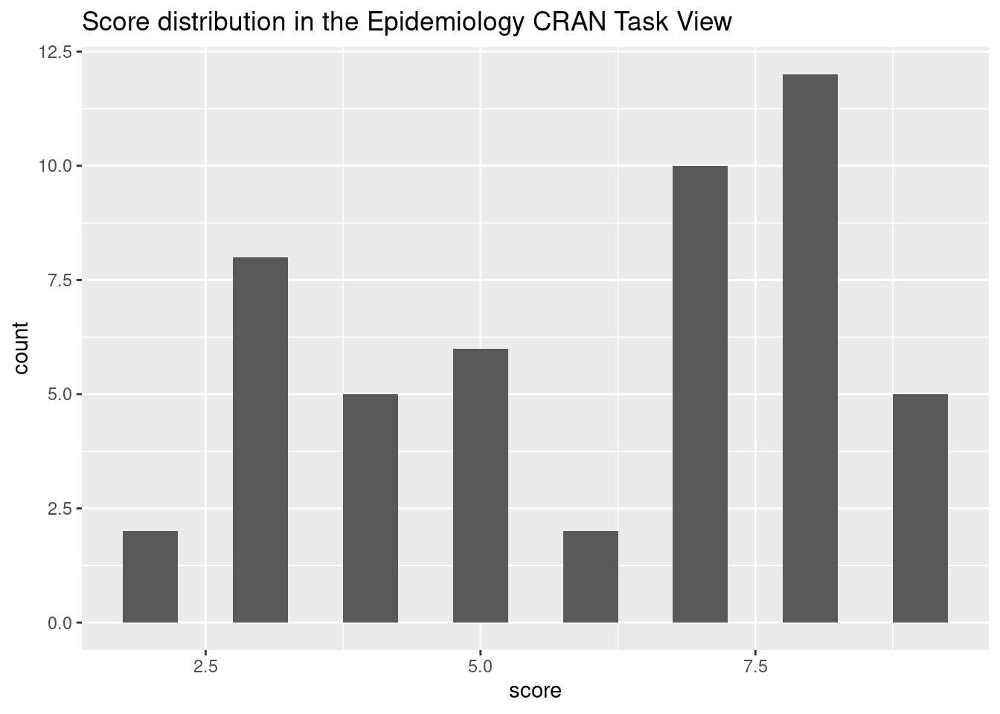
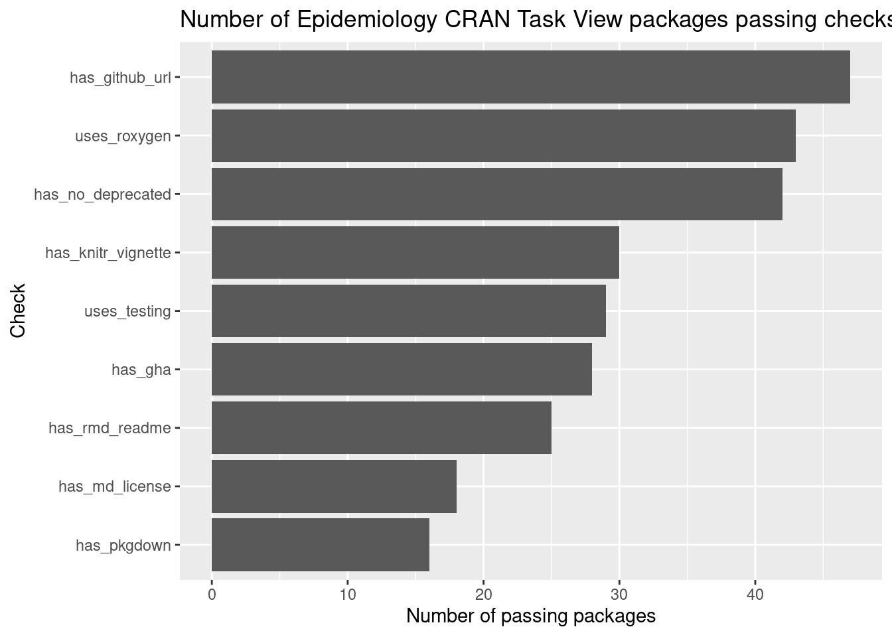

tf <- tempfile(fileext = ".md")
download.file(
paste0(
"https://github.com/cran-task-views/",
params$ctv,
"/raw/main/",
params$ctv,
".md"
),
tf
)Epidemiology Task View analysis
library(ctv)
library(pkgsearch)
library(dplyr)
library(purrr)(
ctv_pkg_descriptions <- ctv::read.ctv(tf) %>%
purrr::pluck("packagelist", "name") %>%
pkgsearch::cran_packages()
)# A data frame: 88 × 39
Package Title Version `Authors@R` Description License URL Encoding LazyLoad
* <chr> <chr> <chr> <chr> <chr> <chr> <chr> <chr> <chr>
1 adegen… "Exp… 2.1.10 "\nc(perso… "Toolset f… GPL (>… "htt… UTF-8 yes
2 AMR "Ant… 2.1.1 "c(\nperso… "Functions… GPL-2 … "htt… UTF-8 <NA>
3 apisen… "Int… 1.0.0 "\nperson(… "API for u… GPL-2 "htt… UTF-8 <NA>
4 argo "Acc… 3.0.2 <NA> "Augmented… GPL-2 <NA> UTF-8 <NA>
5 Bernad… "Bay… 1.1.5 "\nc(perso… "Bayesian … GPL (>… "htt… UTF-8 <NA>
6 bets.c… "The… 1.0.0 "c(person(… "Implement… CC BY … "htt… UTF-8 <NA>
7 bkmr "Bay… 0.2.2 "person(\"… "Implement… GPL-2 "htt… <NA> <NA>
8 cfr "Est… 0.1.0 "c(\nperso… "Estimate … MIT + … "htt… UTF-8 <NA>
9 cholera "Ame… 0.8.0 "person(\"… "Amends er… GPL (>… "htt… UTF-8 <NA>
10 cmprsk "Sub… 2.2-12 <NA> "Estimatio… GPL (>… "htt… <NA> <NA>
# ℹ 78 more rows
# ℹ 30 more variables: RoxygenNote <chr>, Collate <chr>,
# NeedsCompilation <chr>, Packaged <chr>, Author <chr>, Maintainer <chr>,
# Repository <chr>, `Date/Publication` <chr>, crandb_file_date <chr>,
# MD5sum <chr>, date <chr>, dependencies <list>, Date <chr>,
# VignetteBuilder <chr>, BugReports <chr>, LazyData <chr>, Type <chr>,
# Biarch <chr>, Language <chr>, LazyDataCompression <chr>, …Best practices
This list of automated checks for modern best practices in R package development is inspired by standards defined by various R communities such as rOpenSci and Epiverse-TRACE.
The checks performed here should not be taken as a direct measure of code quality, but they reflect adherence to community established best standards. These standards are usually the fruit of extensive experience from these communities and generally help to produce higher-quality, more usable and maintainable code.
It is important to note that statistical or mathematical correctness is not assessed in any way here. This project focuses exclusively on packaging and software development best practices.
From DESCRIPTION
We can already pull some useful information for the DESCRIPTION file, which is the foundation of any R package. We perform the following checks:
- has GitHub URLs: does the package include a link to the source code on GitHub? Even though all CRAN packages are open-source, this demonstrates a commitment to facilitate bug report and community involvement in the project. This is tested by checking for a string starting with “https://github.com/” in the
URLorBugReportsfields. - uses roxygen: roxygen2 is an R package for documentation. It allows package developers to write their documentation next to the function definition (similar to python’s docstrings). It is considered best practice because it reduces the risk of the documentation going stale and its markdown syntax makes it simpler to produce high-quality documentation. This is checked by the presence of the custom
RoxygenNotefield in theDESCRIPTIONfile. - uses testing framework: modern standards in software development recommend the use of regression and unit tests; these are tests that will ensure that your package remains fully functioning after any change to the code. This is tested by checking for the presence of one testing framework (testthat, testit, unitizer, RUnit or tinytest) in the package dependencies.
- no deprecated dependencies: some R packages (RUnit, XML, RCurl, plyr, reshape2) are known to have been superseded or abandoned by the maintainers. They will not include any new features and will at best receive punctual bug fixes. To limit technical debt, it is recommended to depend on more modern and actively developed alternatives.
- has vignette: vignettes are a long form of documentation for R packages. They often include more detailed examples or walkthroughs. To improve usability of the package, at least one vignette should be included. The recommended engine to build vignettes is the knitr R package. Compliance with this check is assessed by the presence of the knitr package in the
VignetteBuilderfield.
desc_checks <- ctv_pkg_descriptions %>%
transmute(
has_github_url = startsWith(URL, "https://github.com/") | startsWith(BugReports, "https://github.com/"),
uses_roxygen = !is.na(RoxygenNote),
has_knitr_vignette = grepl("knitr", VignetteBuilder),
uses_testing = purrr::map_lgl(dependencies, ~ any(.x$package %in% c("testthat", "testit", "unitizer", "RUnit", "tinytest"))),
has_no_deprecated = !purrr::map_lgl(dependencies, ~ any(.x$package %in% c("RUnit", "XML", "RCurl", "plyr", "reshape2")))
)desc_checks %>%
mutate(
n_valid_checks = rowSums(.)
) %>%
arrange(desc(n_valid_checks)) %>%
mutate(across(-n_valid_checks, ~ ifelse(.x, "✅", "❌"))) %>%
DT::datatable()From GitHub
For package that specify the URL to their GitHub repository either in the URL or the BugReports DESCRIPTION field, we can pull additional information and perform further checks:
- has Rmd README: all projects should include a README to briefly introduce visitors to the project scope and goals. Here, we go one step further by checking if the packages include a README in Rmarkdown format. This is the current best practice in R package development because it allows package authors to include code examples with their output. We check here for the existence of this
README.Rmdfile at the root of the GitHub repository. - has md license: while it is not strictly necessary for R packages to include a separate license file (it is technically sufficient to only mention the license in the
DESCRIPTION), it is considered best practice. We check here for the presence of aLICENSE.mdfile at the root of the GitHub repository. The markdown syntax makes it more user-friendly and corresponds to the version automatically created by common R developer tools. - uses pkgdown: the pkgdown R package is a documentation framework for R packages (alternatives in other languages include readthedocs, or mkdocs). This creates a website to host the documentation in a visually pleasing and accessible way. We check compliance by testing for the presence of a mandatory pkgdown configuration file in the repository.
- uses GitHub Actions: on top of tests mentioned earlier, it is good practice to set up an automated system to run these checks on each code change. A popular framework to do so are GitHub Actions, defined in the
.github/workflows/folder. We check for the use of GitHub Actions in packages via the presence of this folder.
library(httr)
source("_scripts/gh.R")gh_checks <- ctv_pkg_descriptions %>%
transmute(
github_repo = dplyr::coalesce(
stringr::str_match(URL, "https://github.com/(\\w+/\\w+)")[, 2],
stringr::str_match(BugReports, "https://github.com/(\\w+/\\w+)/issues")[, 2]
)
) %>%
na.omit() %>%
transmute(
has_rmd_readme = purrr::map_lgl(github_repo, ~ gh_file_exists("README.Rmd", .x)),
has_md_license = purrr::map_lgl(github_repo, ~ gh_file_exists("LICENSE.md", .x)),
has_pkgdown = purrr::map_lgl(github_repo, ~ any(gh_file_list_exists(c("_pkgdown.yml", "_pkgdown.yaml", "pkgdown/pkgdown.yml"), .x))),
has_gha = purrr::map_lgl(github_repo, ~ gh_file_exists(".github/workflows", .x))
)gh_checks %>%
mutate(
n_valid_checks = rowSums(.)
) %>%
arrange(desc(n_valid_checks)) %>%
mutate(across(-n_valid_checks, ~ ifelse(.x, "✅", "❌"))) %>%
DT::datatable()Overall
all_checks <- merge(
gh_checks,
desc_checks,
by = 0
) |>
mutate(package = as.character(Row.names), .keep = "unused")library(ggplot2)
scores <- all_checks |>
mutate(
score = rowSums(pick(-package)),
.keep = "unused"
)
scores |>
ggplot(aes(x = score, y = forcats::fct_reorder(package, score))) +
geom_histogram(stat = "identity") +
labs(
x = "Score",
y = "Package",
title = paste("Individual scores in the", params$ctv, "CRAN Task View")
)Warning in geom_histogram(stat = "identity"): Ignoring unknown parameters:
`binwidth`, `bins`, and `pad`
scores |>
ggplot(aes(x = score)) +
geom_histogram(binwidth = 0.5) +
labs(
title = paste("Score distribution in the", params$ctv, "CRAN Task View")
)
all_checks |>
tibble::column_to_rownames("package") |>
t() |>
as.data.frame() |>
tibble::rownames_to_column("check") |>
mutate(
passed = rowSums(pick(- check)),
.keep = "unused"
) |>
ggplot(aes(x = passed, y = forcats::fct_reorder(check, passed))) +
geom_histogram(stat = "identity") +
labs(
x = "Number of passing packages",
y = "Check",
title = paste("Number of", params$ctv, "CRAN Task View packages passing checks")
)Warning in geom_histogram(stat = "identity"): Ignoring unknown parameters:
`binwidth`, `bins`, and `pad`